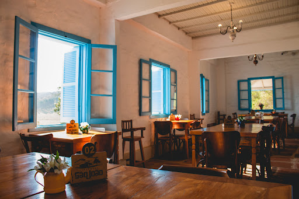

<!DOCTYPE html>
<html lang="pt-br">
</html>
<title>Fazenda São João</title>
    <meta charset="UTF-8">
    <meta http-equiv="X-UA-Compatible" content="IE=egde">
    <meta name="viewport" content="width=device-width, initial-scale=1.0 ">
    <link rel="stylesheet" href="index.css">
 </head>

<body>
    <header>
        <div class="center">
          </img>
        </div>
        <h1>Fazenda São João</h1>
      </header>
<main>
<section>
<p>
    A Fazenda São João, localizada em Ribeirão Claro, Paraná, possui uma rica história que reflete o desenvolvimento agrícola e cultural da região. Fundada no início do século XX, a fazenda desempenhou um papel significativo na economia local, especialmente no cultivo de café, que era a principal atividade agrícola da época.

A fazenda foi estabelecida por imigrantes italianos que se estabeleceram na região em busca de novas oportunidades. Esses pioneiros trouxeram consigo técnicas agrícolas avançadas e um forte senso de comunidade, que contribuíram para o sucesso da fazenda e para o desenvolvimento de Ribeirão Claro como um todo.

Ao longo dos anos, a Fazenda São João cresceu e diversificou suas atividades. Além do café, começou a cultivar outras culturas como cana-de-açúcar e milho, e também investiu na criação de gado. A fazenda se tornou um exemplo de gestão agrícola eficiente, combinando tradição e inovação para manter sua produtividade e sustentabilidade.

A propriedade é notável não apenas por sua contribuição econômica, mas também por seu valor histórico e cultural. A arquitetura colonial da sede da fazenda e das construções ao seu redor preserva a memória dos primeiros colonizadores e reflete o estilo de vida rural da época. A Fazenda São João é um testemunho vivo da história de Ribeirão Claro, representando a evolução da agricultura e da sociedade local ao longo das décadas.

Hoje, a Fazenda São João continua a ser uma referência em agricultura na região. Além de suas atividades produtivas, a fazenda abriu suas portas para o turismo rural, permitindo que visitantes conheçam sua história, suas práticas agrícolas e apreciem suas paisagens naturais. O turismo na Fazenda São João promove a valorização do patrimônio histórico e cultural, bem como a importância da agricultura sustentável.

A história da Fazenda São João é marcada pela determinação e pelo trabalho árduo de seus fundadores e sucessores, que transformaram a propriedade em um símbolo de prosperidade e tradição em Ribeirão Claro. Ela continua a ser um orgulho para a comunidade local, representando o legado de seus antepassados e a contínua busca por desenvolvimento e inovação na agricultura.
</p>
</section>
</main>
<h2>Áreas de Atuação e Oportunidades de Trabalho</h2>
<section>
  <p>
    Agricultura e Cultivo,

Cultivo de Grãos e Outros Produtos:
A Fazenda São João é conhecida por suas práticas agrícolas em cultivo de grãos e outros produtos. As oportunidades nesta área incluem:

Agrônomos: Especialistas que desenvolvem estratégias para melhorar a produtividade das culturas, realizar pesquisas e implementar tecnologias agrícolas.
Técnicos Agrícolas: Profissionais que ajudam no manejo das culturas, controle de pragas e aplicação de fertilizantes e defensivos.
Operadores de Máquinas: Responsáveis pela operação e manutenção de tratores e outras máquinas agrícolas usadas no cultivo e colheita.
b. Agricultura de Precisão:
A fazenda investe em tecnologias para otimizar a produção:

Especialistas em Agricultura de Precisão: Para implementar e gerenciar tecnologias como sensores de solo e sistemas de monitoramento, visando aumentar a eficiência e a sustentabilidade das práticas agrícolas.
Pecuária

Criação de Gado:
A Fazenda São João também se destaca na pecuária, oferecendo oportunidades em:

Veterinários e Zootecnistas: Para cuidar da saúde do gado, melhorar a genética e implementar práticas de manejo eficientes.
Manejadores de Rebanho: Responsáveis pelo cuidado diário dos animais, incluindo alimentação, vacinação e monitoramento de saúde.
Gestão e Administração

A administração eficiente é crucial para o sucesso da fazenda:

Gerentes de Fazenda: Para supervisionar as operações diárias, planejar estratégias e gerenciar equipes.
Profissionais de Recursos Humanos: Para lidar com recrutamento, treinamento e gestão de pessoal.
Contadores e Analistas Financeiros: Para gerenciar o planejamento financeiro, orçamento e relatórios financeiros.
Infraestrutura e Manutenção

Manter a infraestrutura da fazenda é essencial para o funcionamento contínuo:

Engenheiros Civis e Técnicos em Construção: Para projetar e supervisionar a construção e manutenção de estruturas como armazéns, cercas e sistemas de irrigação.
Mecânicos e Técnicos de Manutenção: Para realizar a manutenção e reparo de máquinas e equipamentos agrícolas.
Sustentabilidade e Meio Ambiente

A Fazenda São João busca integrar práticas sustentáveis em suas operações:

Especialistas em Sustentabilidade: Para desenvolver e implementar projetos que minimizem o impacto ambiental e promovam a conservação dos recursos naturais.
Consultores Ambientais: Para garantir que as práticas da fazenda estejam alinhadas com as regulamentações ambientais e desenvolver iniciativas de preservação.
Educação e Treinamento

Capacitar a equipe é fundamental para a melhoria contínua:

Instrutores e Facilitadores de Treinamento: Para oferecer programas de formação sobre novas técnicas agrícolas, manejo de gado e segurança no trabalho.
Programas de Estágio: Para jovens interessados em iniciar carreiras na agricultura e pecuária, proporcionando experiência prática e conhecimento técnico.
Benefícios e Qualidade de Vida
Trabalhar na Fazenda São João oferece uma série de vantagens. A fazenda proporciona um ambiente de trabalho dinâmico e envolvente, com oportunidades de crescimento profissional e pessoal. Os funcionários têm acesso a programas de treinamento e desenvolvimento contínuo, o que ajuda na evolução de suas carreiras.
Voltado para o turismo, temos um restaurante local,que empregra diversas pessoas, em setores diversos. Não podemos nos esquecer também das atividades de lazer e recreação oferecida aos visitantes, que gera oportunidades de emprego.
A qualidade de vida em Ribeirão Claro é enriquecida pela proximidade com a natureza e o ritmo tranquilo da vida rural. A Fazenda São João oferece uma experiência de trabalho imersiva no campo, com a chance de fazer parte de uma equipe dedicada e inovadora.

Em resumo, a Fazenda São João em Ribeirão Claro, PR, é um local que oferece uma variedade de oportunidades de trabalho em agricultura, pecuária, gestão, infraestrutura, sustentabilidade e mais. Com um ambiente de trabalho que combina tradição e inovação, a fazenda é um excelente lugar para desenvolver uma carreira no setor agrícola e contribuir para o crescimento e sucesso da região
</p>
</section>
<div class="center">
  </img>
</div>
</body>